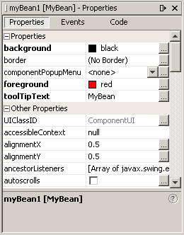

Customization provides a means for modifying the appearance and behavior of a bean within an application builder so it meets your specific needs. There are several levels of customization available for a bean developer to allow other developers to get maximum benefit from a bean’s potential functionality.
The following links are useful for learning about property editors and customizers:
PropertyEditor(in the API reference documentation) interfacePropertyEditorSupport(in the API reference documentation) classPropertyEditorManager(in the API reference documentation) classCustomizer(in the API reference documentation) interfaceBeanInfo(in the API reference documentation) interfaceA bean's appearance and behavior can be customized at design time within beans-compliant builder tools. There are two ways to customize a bean:
- By using a property editor. Each bean property has its own property editor. The NetBeans GUI Builder usually displays a bean's property editors in the Properties window. The property editor that is associated with a particular property type edits that property type.
- By using customizers. Customizers give you complete GUI control over bean customization. Customizers are used where property editors are not practical or applicable. Unlike a property editor, which is associated with a property, a customizer is associated with a bean.
A property editor is a tool for customizing a particular property type. Property editors are activated in the Properties window. This window determines a property's type, searches for a relevant property editor, and displays the property's current value in a relevant way.
Property editors must implement the
PropertyEditorinterface, which provides methods to specify how a property should be displayed in a property sheet. The following figure represents the Properties window containingmyBean1properties: You begin the process of editing these properties by clicking the property entry. Clicking most of these entries will bring up separate panels. For example, to set up the
foregroundorbackgrounduse selection boxes with choices of colors, or press the "..." button to work with a standard ColorEditor window. Clicking on thetoolTipTextproperty opens a StringEditor window.The support class
PropertyEditorSupportprovides a default implementation of thePropertyEditorinterface. By subclassing your property editor fromPropertyEditorSupport, you can simply override the methods you need.To display the current property value "sample" within the Properties window, you need to override
isPaintableto returntrue. You then must overridepaintValueto paint the current property value in a rectangle in the property sheet. Here's howColorEditorimplementspaintValue:public void paintValue(java.awt.Graphics gfx, java.awt.Rectangle box) { Color oldColor = gfx.getColor(); gfx.setColor(Color.black); gfx.drawRect(box.x, box.y, box.width-3, box.height-3); gfx.setColor(color); gfx.fillRect(box.x+1, box.y+1, box.width-4, box.height-4); gfx.setColor(oldColor); }To support the custom property editor, override two more methods. Override
supportsCustomEditorto return true, and then overridegetCustomEditorto return a custom editor instance.ColorEditor.getCustomEditorreturnsthis.In addition, the
PropertyEditorSupportclass maintains aPropertyChangeListenerlist, and fires property change event notifications to those listeners when a bound property is changed.
Property editors are discovered and associated with a given property in the following ways:
- Explicit association by way of a
BeanInfoobject. The editor of the title's property is set with the following line of code:pd.setPropertyEditorClass(TitleEditor.class);
- Explicit registration by way of the
java.beans.PropertyEditorManager.registerEditormethod. This method takes two arguments: the bean class type, and the editor class to be associated with that type.
- Name search. If a class has no explicitly associated property editor, then the
PropertyEditorManagersearchs for that class's property editor in the following ways:
- Appending "Editor" to the fully qualified class name. For example, for the
my.package.ComplexNumberclass, the property editor manager would search for themy.package.ComplexNumberEditorclass.- Appending "Editor" to the class name and searching a class path.
You have learned that builder tools provide support for you to create your own property editors. What other needs should visual builders meet for complex, industrial-strength beans? Often it is undesirable to have all the properties of a bean revealed on a single (sometimes huge) property sheet. What if one single root choice about the type of the bean rendered half the properties irrelevant? The JavaBeans specification provides for user-defined customizers, through which you can define a higher level of customization for bean properties than is available with property editors.
When you use a bean Customizer, you have complete control over how to configure or edit a bean. A Customizer is an application that specifically targets a bean's customization. Sometimes properties are insufficient for representing a bean's configurable attributes. Customizers are used where sophisticated instructions would be needed to change a bean, and where property editors are too primitive to achieve bean customization.
All customizers must:
- Extend
java.awt.Componentor one of its subclasses.- Implement the
java.beans.Customizerinterface This means implementing methods to registerPropertyChangeListenerobjects, and firing property change events at those listeners when a change to the target bean has occurred.- Implement a default constructor.
- Associate the customizer with its target class via
BeanInfo.getBeanDescriptor.